Reflection: How to Represent Linked Documents
Ted Nelson envisioned the docuverse implemented with bidirectional visual links that have been explored in many models and prototypes:
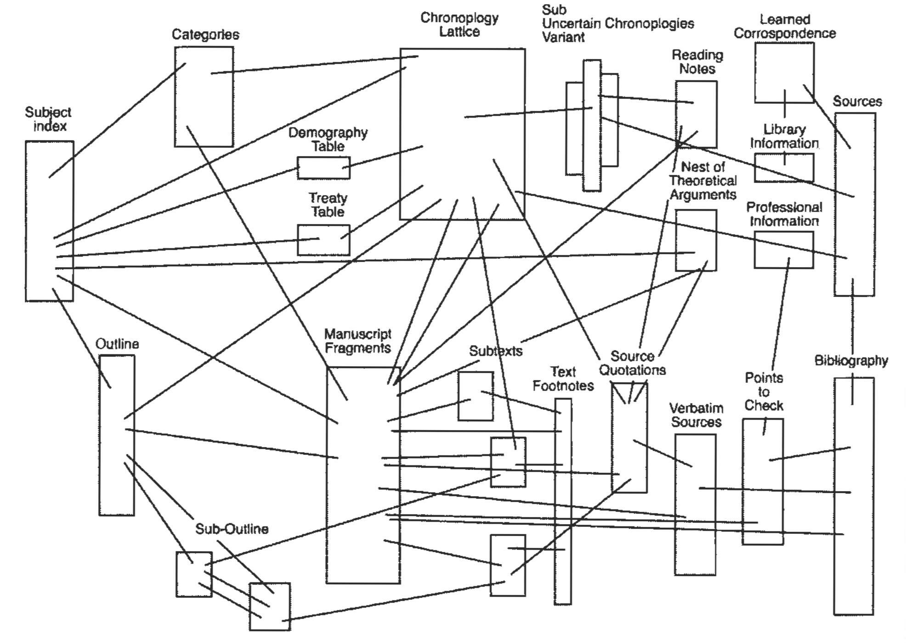
Image source: Nelson (1965)
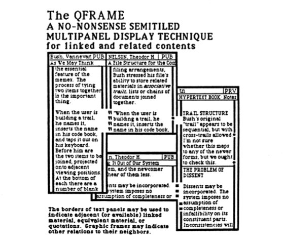
Image source: Nelson (1987)

Image source: Nelson (2015)
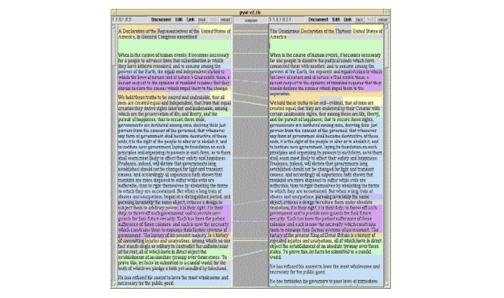
Image source: Nelson (1999)
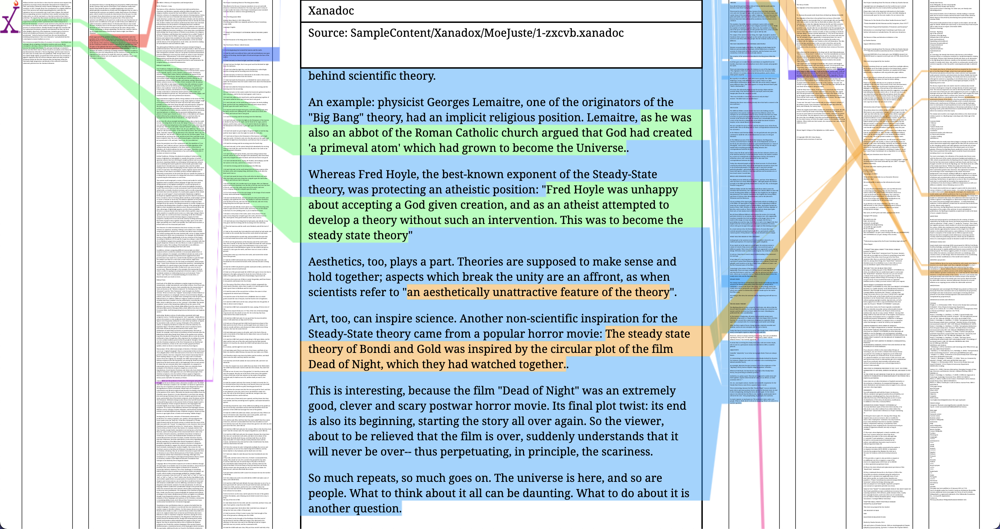
Screenshot of Xanadoc (try the interactive demo here)

Image source: Nelson (2016)
As discussed in entry 03, working with documents side-by-side and visual links is beneficial. One of the benefits is that content included in one document from another (i.e., transclusion) is directly and visually available for cross-examination. Direct access to the original context enables the ability to assess whether the meaning conveyed in the original document has been misconstrued in other documents. On the Web, links are one-directional, and the linked documents (if at all) take the form of previews (of the web page, not a particular content item)1 as the cursor hovers on a hyperlink.

Screenshot of Wikipedia
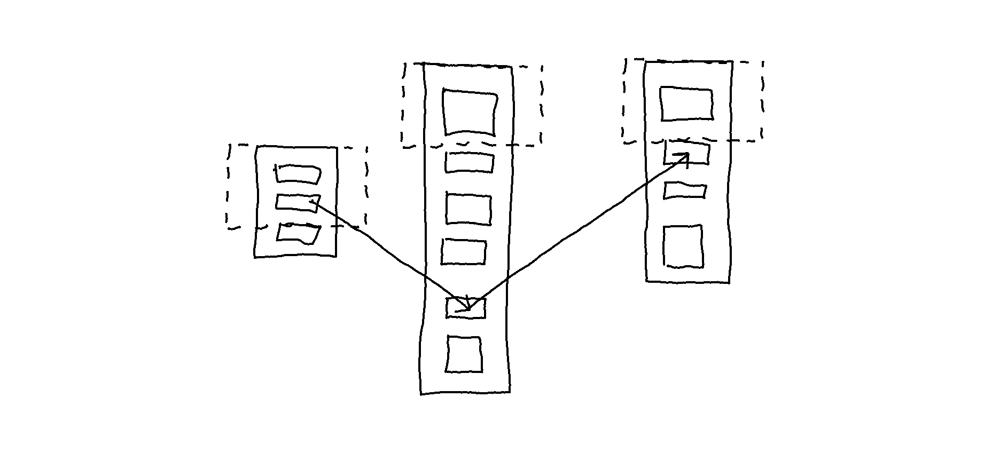 An improvement would be landing at the particular linked part of a document: 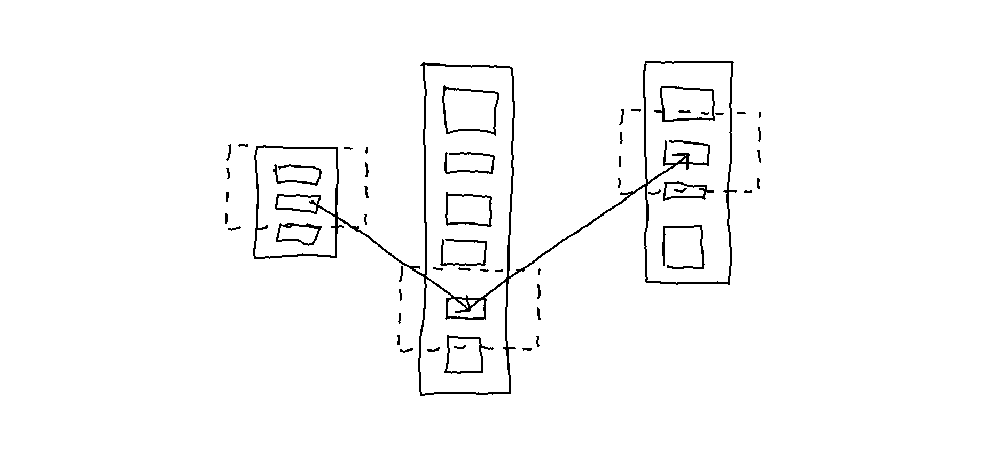
As has been explored in the interactive prototypes, some issues come with visual links between documents, mainly due to the complexity of information as various links crisscross each other. Several ideas for engaging with that complexity have been explored, some of which have been implemented as prototypes:
Layers
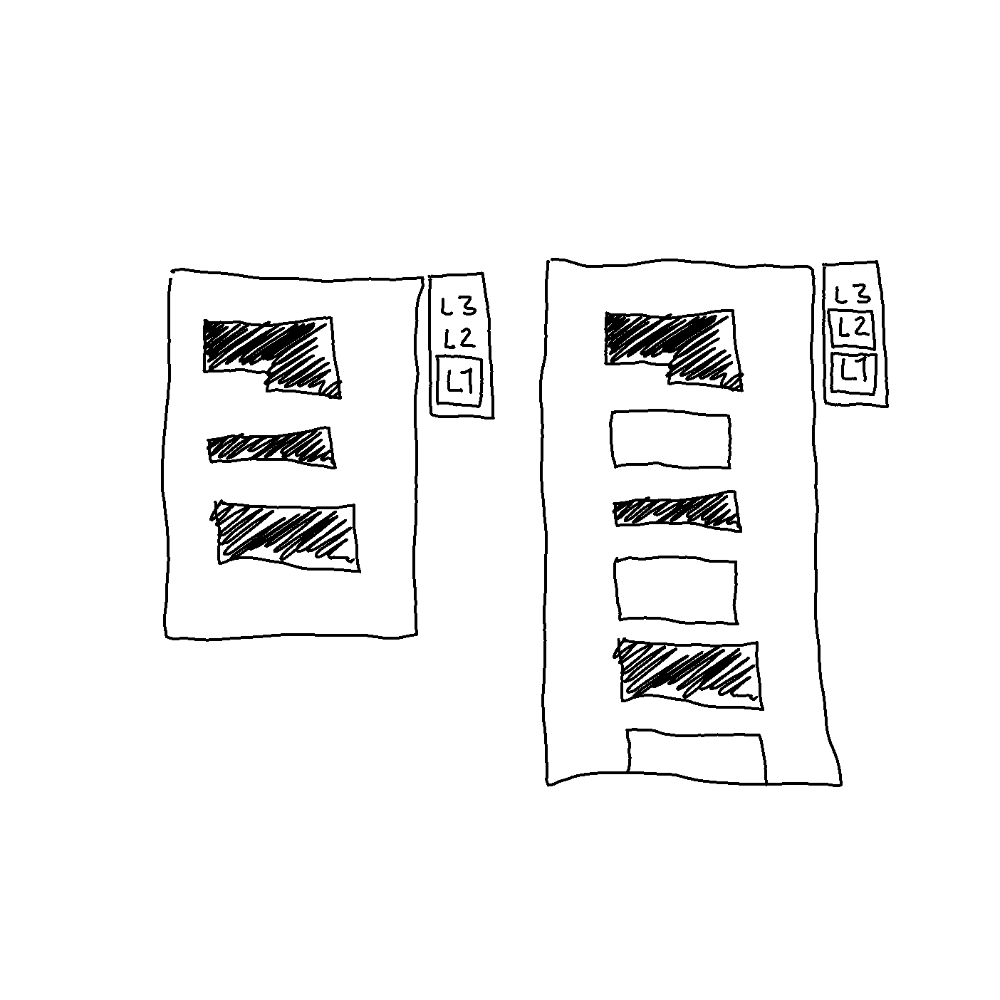
Expandable grids
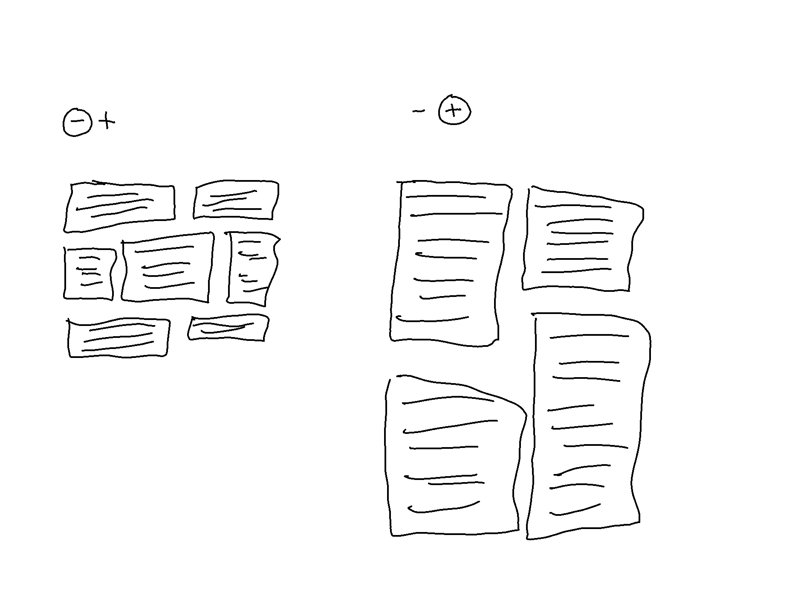
Modular hierarchical blocks linked non-hierarchically
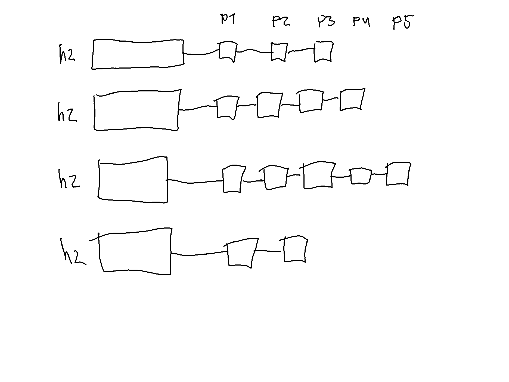
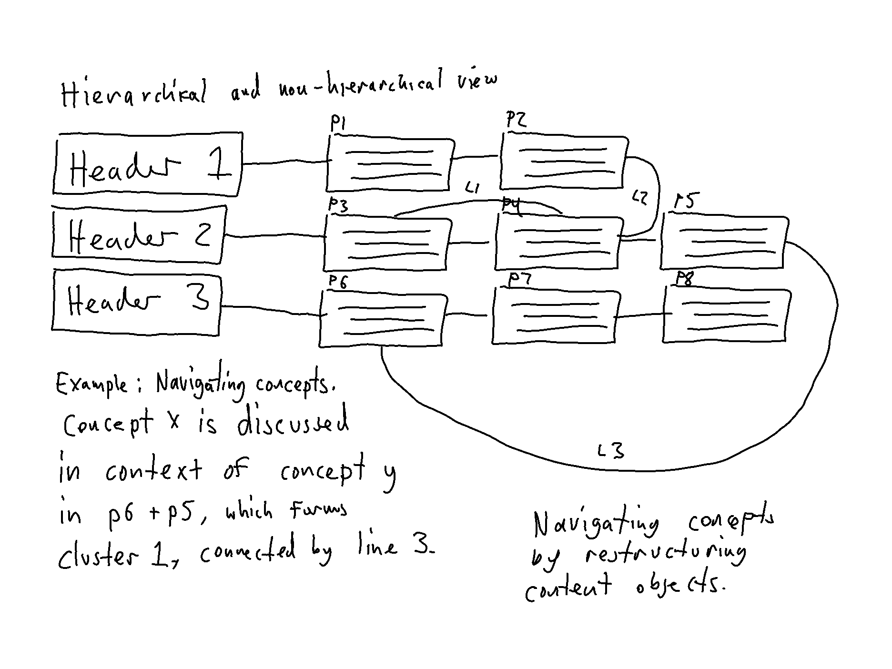
Layout inspired by concept maps
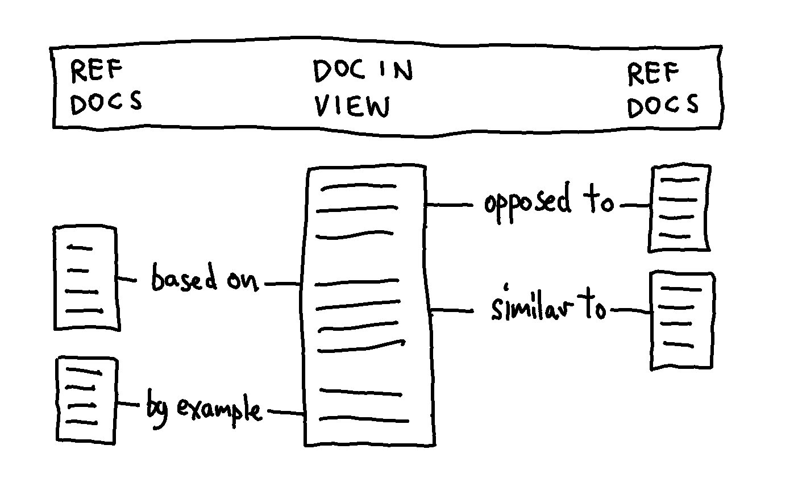
Sets of sequential content items (re)arranged in a stack
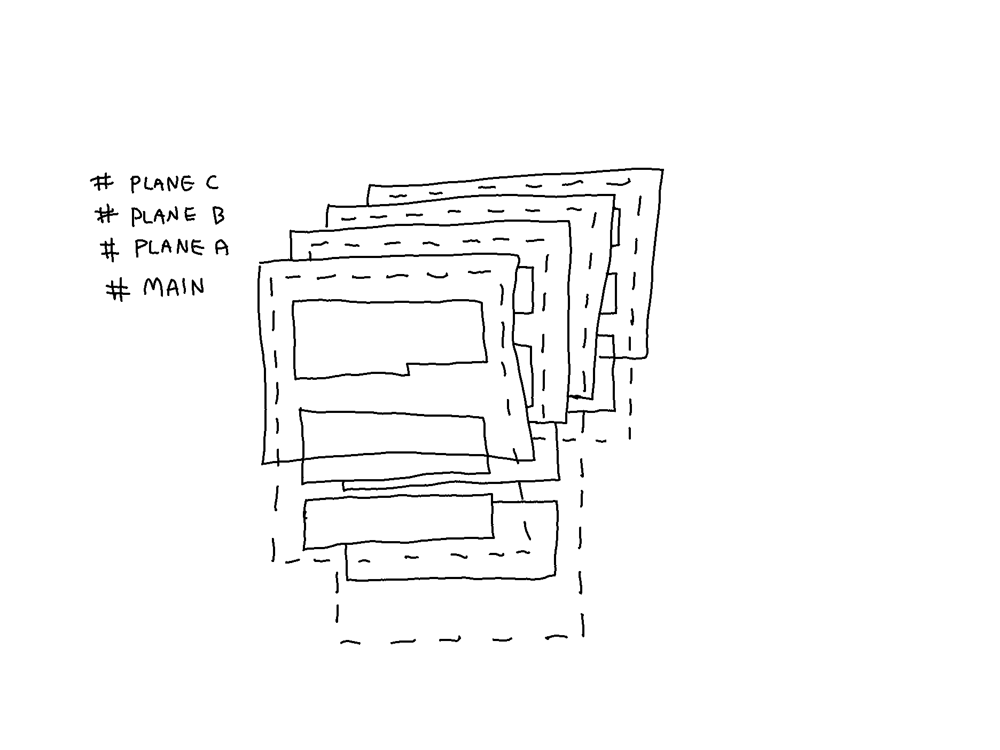
Applying tags to links and documents
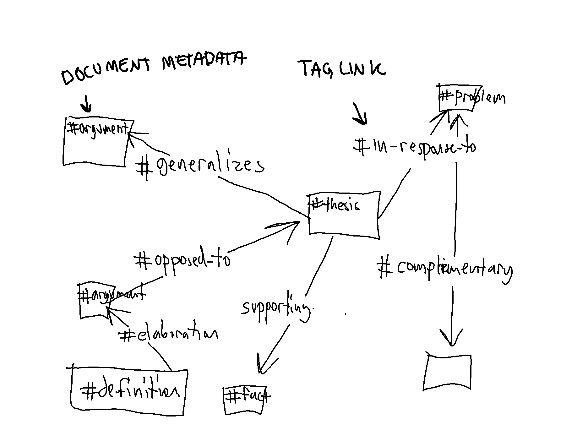
In the previous entry, the possibility to apply #Labels to taglinks (and document metadata) in order to filter information was introduced, which is deemed useful, particularly in Inventory View. However, in Lateral Mode, the crisscrossing visual links between documents is potentially distracting and does not make interacting with the connections manageable. In the previous entry, the proposed solution took the form of preview icons that are only visible on deliberate action (i.e., as the cursor hovers a link). However, that proposal results in the same problem as with links on the Web: the link endpoint is not seen, and viewing a linked document means leaving the currently open document. A new representation of linked documents (in Lateral Mode) is explored in the next entry.
Sources
Nelson TH. A File Structure for the Complex, the Changing, the Intermediate. 1965;13.
Nelson TH. Literary Machines: The report on, and of, Project Xanadu concerning word processing, electronic publishing, hypertext, thinkertoys, tomorrow’s intellectual revolution, and certain other topics including knowledge, education and freedom. 87.1. Sausalito, California: Mindful Press; 1987.
Nelson TH. Xanalogical Structure, Needed Now More than Ever: Parallel Documents, Deep Links to Content, Deep Versioning, and Deep Re-Use. ACM Computing Surveys. 1999;31(4):32.
Nelson TH. What Box? In: Dechow DR, Struppa DC, editors. Intertwingled. Cham: Springer International Publishing; 2015. p. 133–50.
Nelson TH. The Xanadu Universe [Internet]. 2016 [cited 2021 Oct 28]. Available from: https://xanadu.com/xUniverse-D6
Endnotes
Traversing content on the Web by selecting hyperlinks commonly entails blindly jumping and landing at the top of the page: ↩